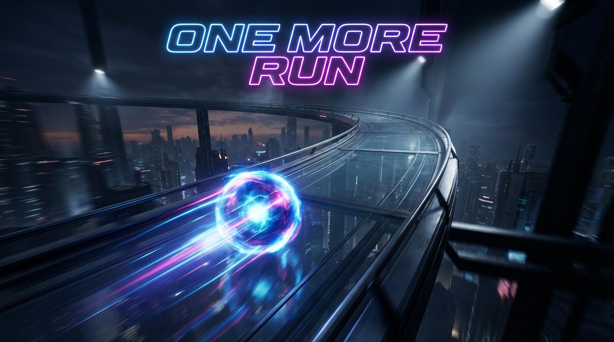

Unreal Engine 5 · C++ · Physics-Driven
Precision movement at extreme velocity.
A real-time time trial experience built around modular architecture, performance-first engineering, and gameplay clarity.
High-speed. High-precision. No forgiveness.
One More Run is a physics-driven time trial game where players control a high-energy sphere navigating modular tracks at extreme speeds. Movement is fully physics-based — slope acceleration, impulse hops, ground detection, and precision steering.
Built in Unreal Engine 5 using C++ and Blueprint integration, the project explores real-time systems architecture, performance optimization, and gameplay clarity.
Core Systems Architecture
Movement System
- Custom Pawn (AOMRPlayerPawn)
- Physics sphere root component
- Hop impulse & cooldown logic
- Slope-based acceleration scaling
- Ground detection & air control tuning
Game Architecture
- Custom GameMode & GameState
- Time trial lap tracking
- Checkpoint system
- UMG HUD countdown & best times
- Modular track design pipeline
Performance Engineering
- Collision complexity optimization
- Physics sub-stepping tuning
- Lighting balance for FPS stability
- Camera FOV speed illusion tuning
- Frame profiling & bottleneck analysis
Built Like a System. Not a Prototype.
One More Run is not a tutorial project. It is a systems exercise. Every mechanic is modular. Every track piece is reusable. Every performance decision is intentional.
The goal is clarity at speed — movement that feels fast, fair, and predictable at high velocity.
Currently in Active Development
Track design, movement refinement, audio layering, and performance tuning are ongoing.
Interested in collaborating →